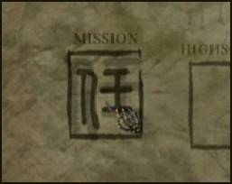
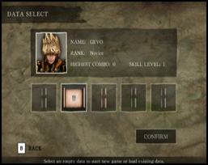
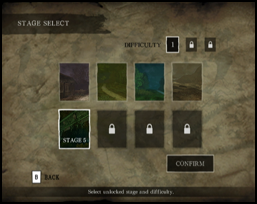
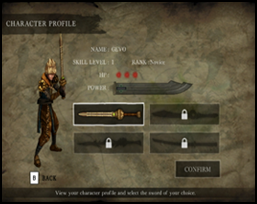
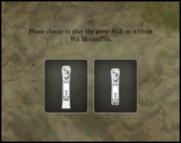

9 |
Menu |
|
Mission  Select MISSION in the main menu to start the game. The objective of the game is to eliminate all ghost enemies in your path and defeat the Ghost Queen in the final stage. Game Data Select  In DATA SELECT menu, select a new data slot to start a new game or select an existing data slot to load the saved game. You can save up to 5 game data. Stage Select  You will start the game on the first stage. Subsequent stages will be unlocked when a stage is cleared. The next level of difficulty will be unlocked when all the 8 stages are cleared for the current difficulty. You can select an unlocked stage to play in the Stage Select menu. Character Profile  In CHARACTER PROFILE menu, view your character's status. Select the type of sword to use before starting each stage. Different types of sword execute special power differently. Select Operation Mode  Select to use or not to use Wii MotionPlus before playing the game. The operation mode can only be selected before starting the game. During the game, exit to main menu and re-enter the game if you want to change operation mode. Highscore Select HIGHSCORE in the main menu. Compare high scores with different players. Sound Settings Select SETTINGS in the main menu. This menu allows you to set the volume level of background music and sound effects. |
 |
 |
 |